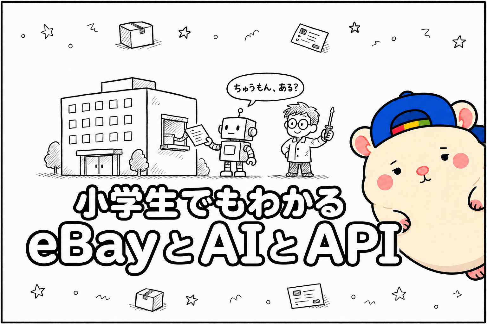
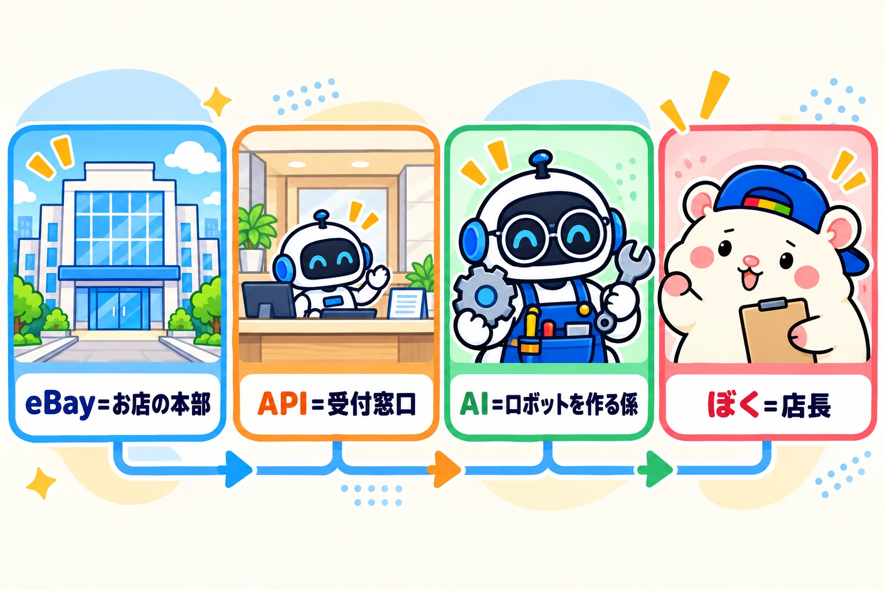
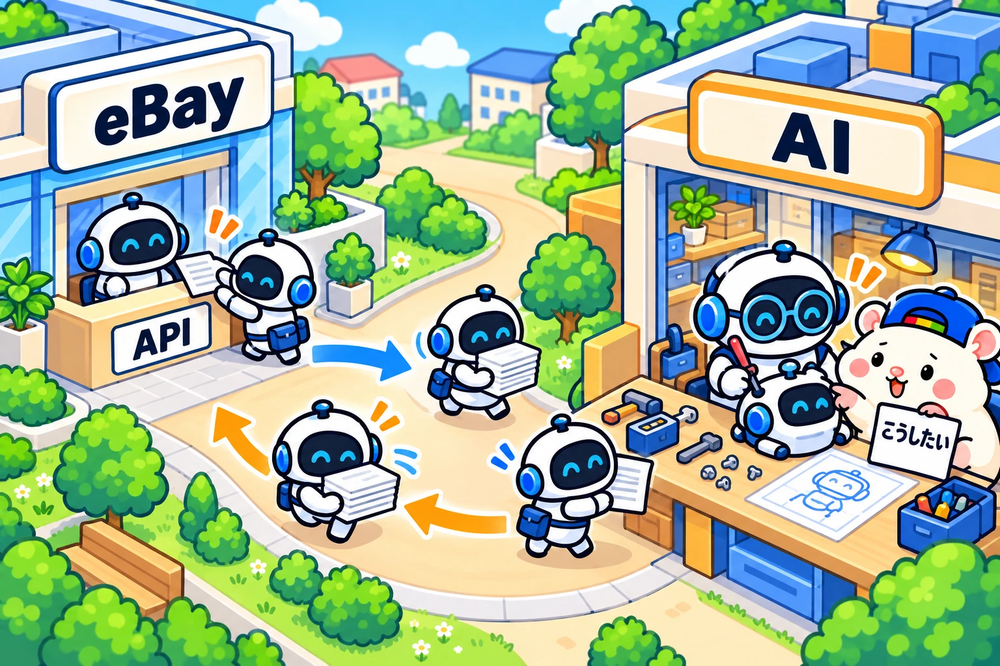

eBayを自動で回すしくみは、3つの言葉がわかれば、ぜんぶわかります。
eBay、AI、API。
「API」と聞くと、むずかしそうですよね。
ぼくも、最初はそう思いました。
でも、APIは「受付の窓口」のことです。
それだけです。
今日は、小学生にもわかるように、この3つのことを書きます🐹
まず、3つをひとことで

先に、答えです。
・eBay = 大きなお店の「本部」
・API = 本部の「受付の窓口」
・AI = 窓口に通うロボットを、作ってくれる係
それから、もう1人。
・ぼく = 店長。「こうしてほしい」と言うだけ
出てくるのは、この4人だけです。
1人ずつ、見ていきます。
eBayは、遠い国の大きなお店の本部
eBayは、世界中の人が買いものに来る、大きなお店です。
ぼくの店も、このお店の中にあります。
本部には、ぼくの店のことが、ぜんぶ書いてあります。
・どの商品を、いくらで売っているか
・どの商品が、売れたか
・お客さんから、どんなメッセージが来たか
ふだんは、これをパソコンの画面で見ます。
eBayのページを開いて、1ページずつ見ていきます。
これは、人間のための入り口です。
でも、ぼくの店の商品は6,000個以上あります。
1つずつ画面で見ていたら、1日かかっても終わりません。
APIは、本部の「受付窓口」
そこで、APIです。
APIは、機械のための入り口です。
本部の横にある、受付の窓口だと思ってください。
窓口には、決まりが3つあります。
① 決まった紙に書いて、たのむ
「きのうの注文を見せてください」
「この商品を、売り切れにしてください」
決まった書き方でたのむと、すぐに答えが返ってきます。
② 合言葉がいる
知らない人に、ぼくの店の注文を見られたら困ります。
だから窓口では、「この店の係です」という合言葉を言います。
③ 1日にたのめる回数が、決まっている
窓口ごとに、1日にたのめる回数が決まっています。
たとえば、ほかの店の値段を調べる窓口は、ぼくの店では1日2万5,000回までです。
むずかしいのは、これだけです。
APIは、「決まった紙と合言葉で、本部にたのみごとができる窓口」。
eBayに申しこめば、お金をはらわずに使えます。
▼窓口の種類をぜんぶ見たい人はこちら

AIは、窓口に通うロボットを作る係
ここで、よくあるかんちがいがあります。
「AIが、毎回eBayに行って、仕事をしている」
じつは、ちがいます。
AIの仕事は、ロボットを作ることです。
ここでいうロボットは、パソコンの中で、決まった仕事をくり返すしかけのことです。
(むずかしい言葉では、プログラムと言います)
ぼくは、AIにこうたのむだけです。
「売れたら、すぐスマホで教えてほしい」
「毎日、値段が高すぎないか見てほしい」
するとAIは、窓口へのたのみ方を調べて、ロボットを作ってくれます。
ぼくは、ロボットの作り方を知りません。
できたロボットは、決まった時間に、窓口に通います。
休みません。わすれません。
AIに毎回やってもらうと、時間がかかります。
AIを使える回数にも、すぐに届いてしまいます。
だから、AIは作る係。毎日はたらくのはロボット。
ここが、いちばん大事なところです。
3人がつながると、こう動く
ぼくの店のロボットたちの、1日の時間わりです。
・注文の係: 売れていないか、ずっと見ている(3時間ごとに、見のがしがないかも確かめる)
・在庫の係: 4時間ごとに、仕入れ先にまだ商品があるか確かめる
・値段の係: 毎日16時12分に、値段を見直す
・出品の係: 毎日18時57分に、新しい商品を売り場に出す
・報告の係: 毎朝9時40分に、きのうの結果を教えてくれる
時間わりの紙は、20枚近くあります。
商品が売れたときは、こう動きます。
- 注文の係が、窓口で「新しい注文、ある?」と聞く
- eBayの本部が「ありますよ」と答える
- 注文の係が、ぼくのスマホに「売れました」と知らせる
- ぼくが、仕入れ先で「買う」ボタンを押す
この流れに、AIは出てきません。
AIがはたらいたのは、この係たちを作ったときです。
うまく動かないときや、もっとよくしたいときだけ、またAIに相談します。
それから、ロボットはeBayのページをクリックしていません。
使っているのは、eBayが用意した窓口(API)だけです。
まとめ

もう一度、まとめます。
・eBayは、大きなお店の本部
・APIは、本部の受付の窓口
・AIは、窓口に通うロボットを作ってくれる係
・ぼくは、「こうしてほしい」と言う店長
APIのことを、自分で覚えなくて大丈夫です。
覚えるのは、AIです。
ぼくたちは、「何をしてほしいか」を言えれば大丈夫。
あなたが毎日、eBayでくり返している仕事は何ですか?
その中から1つ、「これを毎日やってくれるロボットを作って」とAIにたのんでみてください。
▼窓口へのつなぎ方と、最初に任せる3つの仕事はこちら

▼中の人🏠(レンタルスペース23部屋・売上1.5億)のレンスペ実録

▼ブログ(eBay×レンスペ、全記事まとめ)

▼この店のやり方は、ぜんぶ1冊にまとめてあります
リサーチ・出品・値付け・顧客対応まで、初月利益10万4,286円を出した実店舗の記録と手順を全部書いた教科書です。
読んだその日から、AI社員の作り方をそのまま真似できます。
『AI × eBay輸出の教科書 — 梱包以外、ぜんぶAI』

販売価格は3部売れるごとに2,000円ずつ値上がりします（上限あり）。内容・最新価格は販売ページをご確認ください。